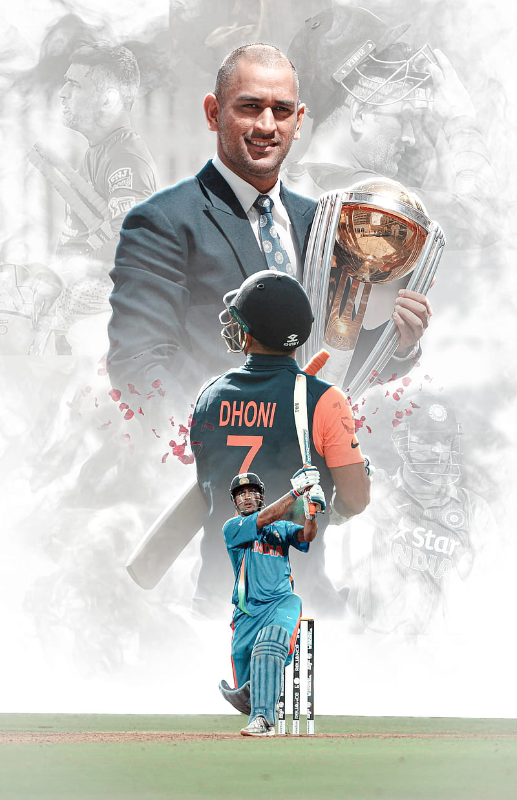

Mahendra Singh Dhoni was born on 7 July 1981, commonly known as MS Dhoni. Dhoni was born in Ranchi, Bihar (now in Jharkhand). Dhoni was the goalkeeper for his DAV Jawahar Vidya Mandir school's football team, but after seeing his goalkeeping skills, coach Keshav Ranjan Banerjee, one who inspired Dhoni to be a cricketer, picked him to play cricket for his school team. His exceptional wicketkeeping skills allowed him to become the regular wicketkeeper at the Commando Cricket Club (1995–1998). Based on his performance at club cricket, he was picked for the 1997/98 season Vinoo Mankad Trophy Under-16 Championship, where he performed well. From 2001 to 2003, Dhoni worked as a Travelling Ticket Examiner (TTE) at Kharagpur railway station under South Eastern Railway in Midnapore (W), a district in West Bengal.
Mahendra Singh Dhoni
Indian Cricketer.
Biography
Dhoni is a former Indian cricketer and captain of the Indian national team in limited-overs formats from 2007 to 2017, and in Test cricket from 2008 to 2014. He is also the current captain of Chennai Super Kings in the Indian Premier League. Under his captaincy, India won the 2007 ICC World Twenty20, the 2011 Cricket World Cup, and the 2013 ICC Champions Trophy, the most by any captain. He also led India to victory in the 2010 and 2016 Asia Cup. Additionally, under his leadership, India won the 2010 and 2011 ICC Test Mace and 2013 ICC ODI Championship. Dhoni is a right-handed wicket-keeper batsman known for his calm captaincy and his ability to finish matches in tight situations. Mahi scored 17,266 runs in International Cricket (including 10,000 plus runs in ODI Internationals) and is considered one of the best finishers in the game. He is also one of the greatest wicket-keepers and captains in the history of cricket.
Achivements
1) MS Dhoni is the only Indian captain who has led India to all three major ICC events. From winning the maiden T20 World Cup in 2007 on his captaincy debut to lead India to a World Cup victory on home soil in 2011. In 2013 he has won the Champions Trophy.
2) Under his captaincy, India holds the numero uno position in Test ranking for 18 months.
3) MS Dhoni is the only non-Australian captain who has led his team more than 100 matches. He is also the third captain to have won the 100 matches after two Australian captains after Ricky Ponting and Allan Border.
4) Dhoni is the fourth fastest batsman who has completed 8000 runs in New Zealand fifth and final match.
5) In 2013 Champions Trophy Dhoni has won the Champions Trophy which made Dhoni have all three ICC trophies in his kitty. In the Champions Trophy India was the only team who were unbeaten. In the final, India defeated England by 5 runs.
6) On November 1, 2011, the Indian Territorial Army conferred with honorary rank Lieutenant Colonel to Dhoni after which Dhoni has become the only captain after Kapil Dev to receive this prestigious award.
7) 2008 and 2009 Dhoni was awarded the ICC Player of the Year trophy.
8) In 2011, 2012 and 2013 under Dhoni captaincy, India was named as ICC team of the year.
9) Dhoni has won the Rajiv Gandhi Khel Ratna award in 2007.